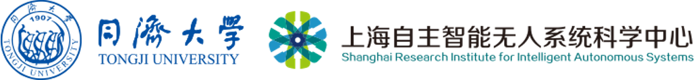
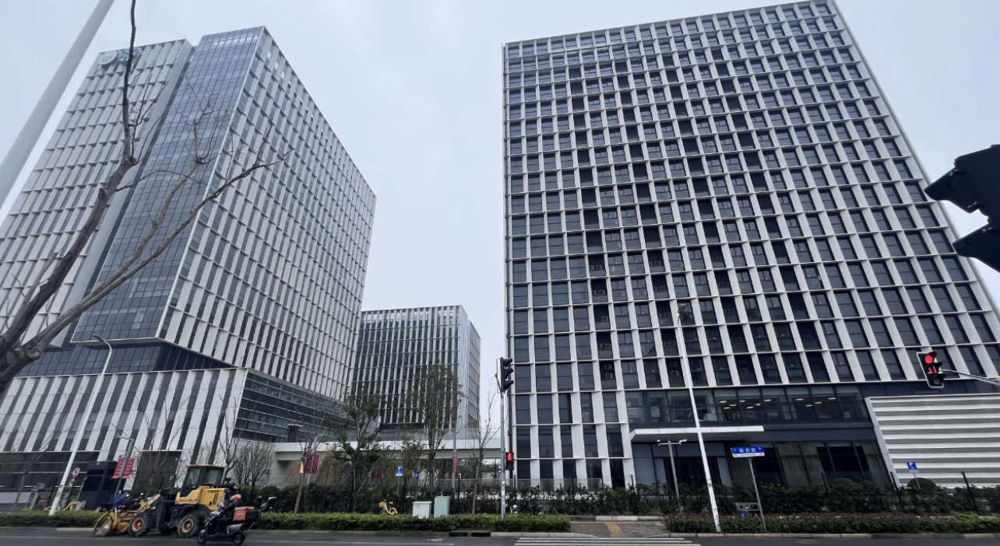
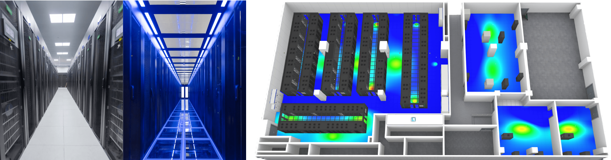

@lab

@ 同济大学 · 上海自主智能无人系统科学中心
相关链接 → 同济大学机器人实验室 · 早稻田大学语言智能实验室
我们在做什么？
@lab 研究大模型与智能体的动力学、复杂性和语义压缩。技术主线包括状态空间几何、相变与临界性、信息瓶颈及生成分布。
研究目标是建立可测量的序参量和失真函数，并将其用于训练诊断、生成监测、智能体控制、文档聚类与知识检索。
研究方向
五条方向共享一个问题：如何从局部概率、有限状态与异质观测中识别、表示并控制宏观结构。
研究主题
-
大模型与复杂性
分形几何 · 统计流形 · 长程依赖 · 生成退化
代表工作：NeurIPS 2025 · Physical Review Research 2024 -
语义压缩与聚类
信息瓶颈 · 率失真 · 生成式聚类 · 知识索引
代表工作：ICML 2024 Oral · AAAI 2025 -
非线性语义表示与线性语言模型
语义场 · 多义性 · 状态空间模型 · 有限状态记忆
代表工作：NeurIPS 2022 -
复杂金融市场的语义模型
股票表示 · 事件语义 · 组合优化 · 尾部风险
代表工作：ACL 2020 · Knowledge-Based Systems 2022
招生信息
2027级硕士生
欢迎报考同济大学 2027 级硕士研究生，研究方向包括大模型与智能体、复杂系统、语义压缩及金融语义建模。
2027年博士生（直博 / 普博）
欢迎硕士生与博士生围绕以下问题开展研究：
- 智能体为什么会失稳？如何让其长期稳定运行？
- 如何度量大语言模型中的宏观复杂性与涌现结构？
- 模型如何压缩知识，并在有限容量下保持任务相关信息？
你将参与
- 建模大模型与智能体的长期状态、失稳机制和临界转变
- 设计生成过程的在线诊断、状态调控与训练方法
- 研究信息压缩、生成式聚类、知识索引与检索
- 开展 AI × 复杂系统 × 信息论的交叉研究
我们希望你
- 对大模型 / AI 基础问题有兴趣
- 具备数学基础（线性代数 / 概率 / 优化）
- 有一定编程能力（Python / PyTorch）
- 愿意长期投入基础研究
科研实习生（长期）
- 本科三年级及以上（上海地区优先）
- 对大模型或智能体系统有兴趣
- 每周 ≥ 2 天投入
- 支持远程 / 线下（同济张江基地）
实验室资源
可使用的科研条件包括：
- 科研项目支持与学生补贴
- 同济大学 GPU 计算平台
- 张江研究基地的科研办公与住宿空间
申请方式
请发送以下材料至：📧 duxin@tongji.edu.cn
- 简历（CV）
- 成绩单
- 研究兴趣说明（可选）
平台介绍：上海自主智能无人系统科学中心

中心由教育部依托同济大学设立，相关科研平台包括：
- 自主智能无人系统全国重点实验室
- 国家自然科学基金委基础科学中心
- 教育部前沿科学中心
- 国家人工智能产教融合创新平台
学科与培养
- 全国首批“智能科学与技术”一级交叉学科博士点
- 强调 AI + 复杂系统 + 工程系统的交叉培养
张江研究基地
- 占地 43 亩，建筑面积 12.75 万平方米

算力平台
- 投资数亿建设的大规模 GPU 算力中心（2025 已投入使用）
- 20+ 台 NVIDIA DGX 系列服务器与智能体计算平台
